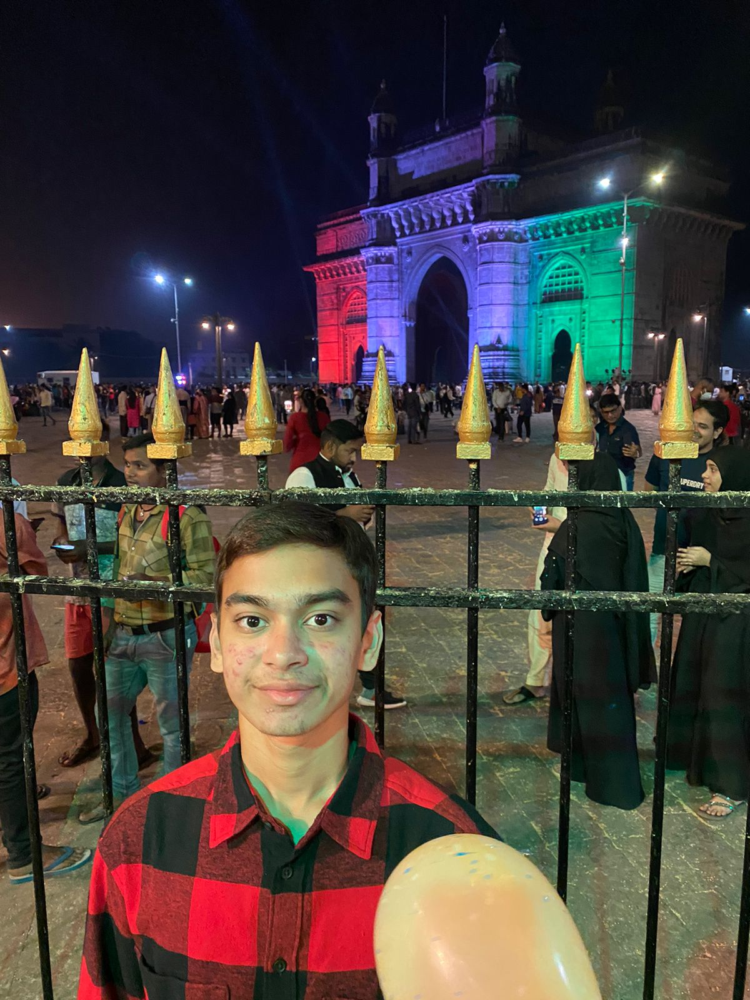
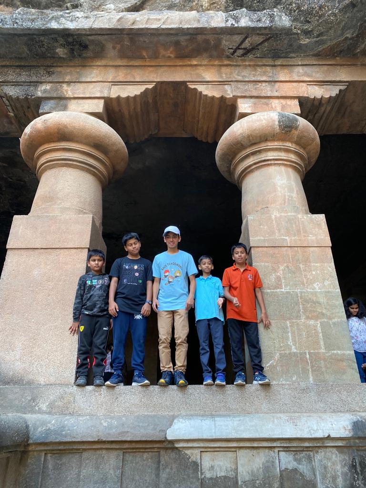
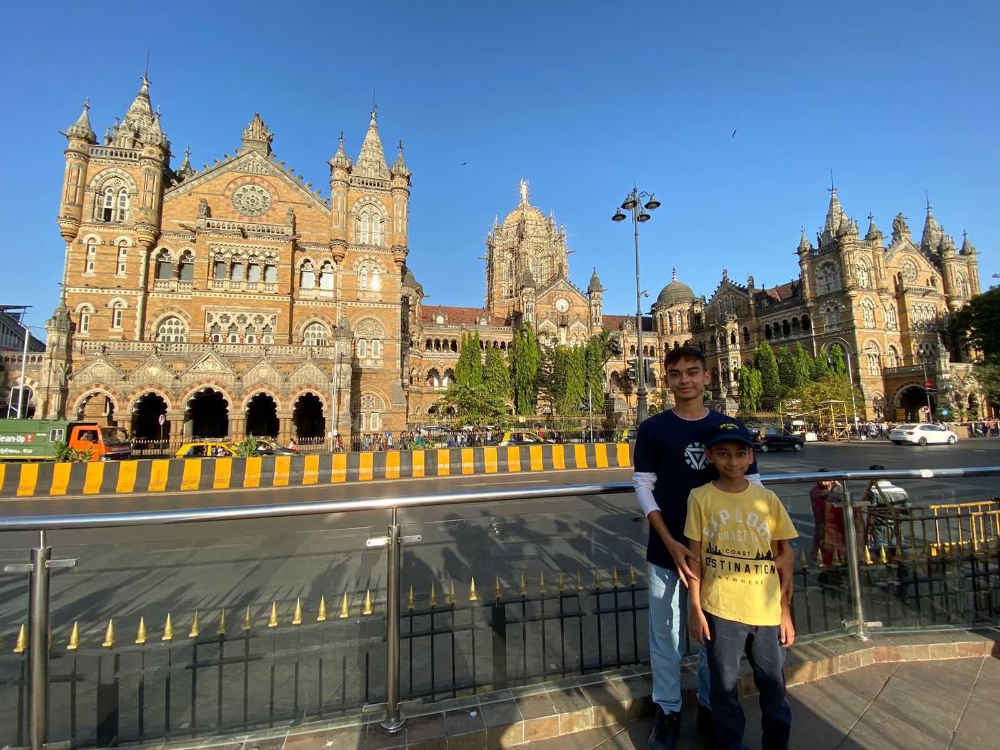
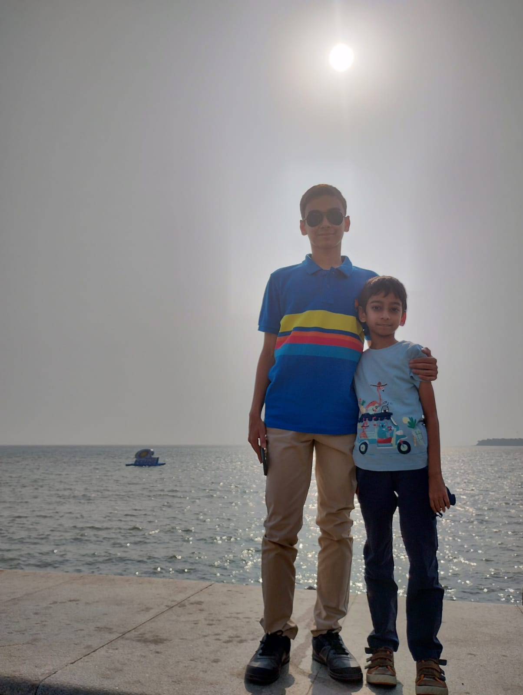
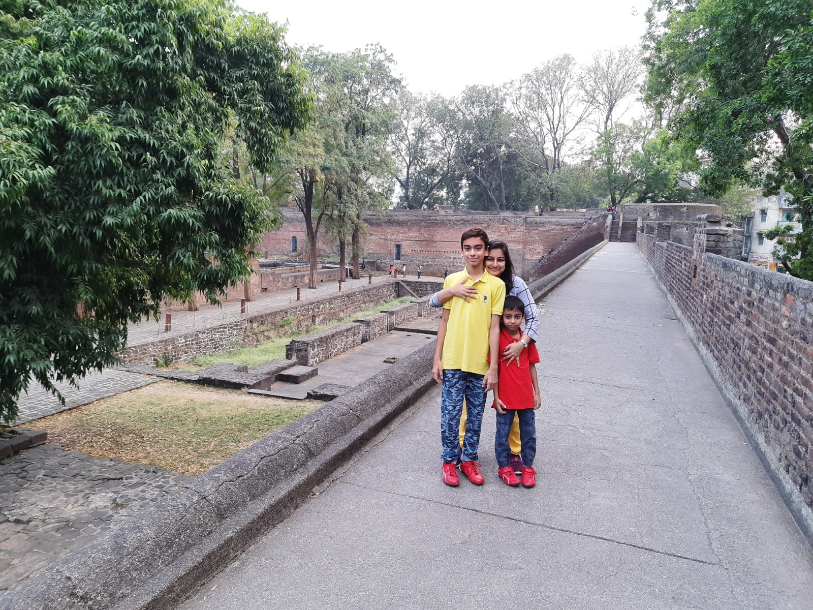
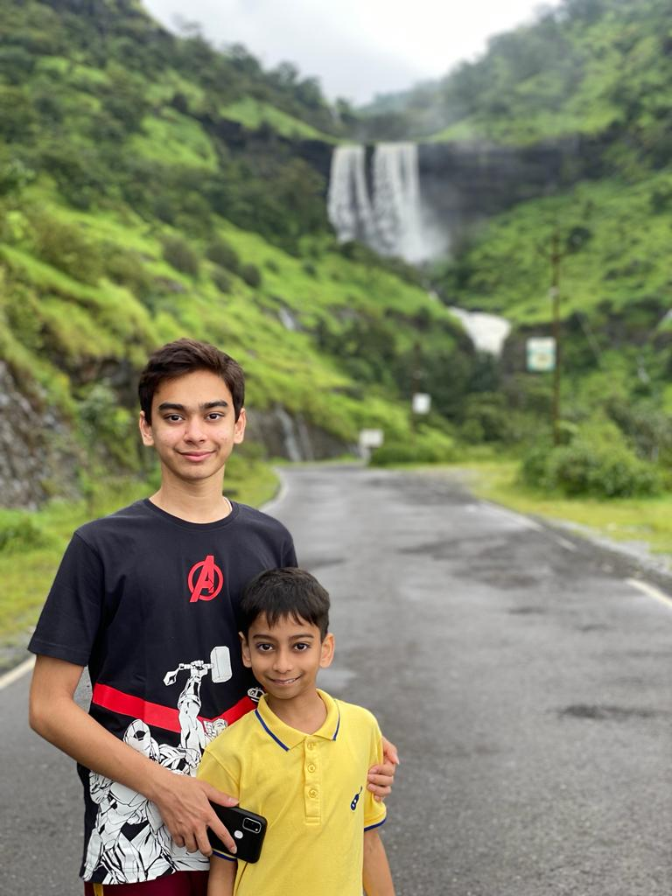

Gateway of India in Mumbai
The Gateway of India is an arch-monument built in the early 20th century in the city of Mumbai, India. It was erected to commemorate the landing of King-Emperor George V, the first British monarch to visit India, in December 1911 at Strand Road near Wellington Fountain
Elephanta Caves in Mumbai
he Elephanta Caves are a collection of cave temples predominantly dedicated to the Hindu god Shiva, which have been designated a UNESCO World Heritage Site. They are on Elephanta Island, or Gharapuri, in Mumbai Harbour, 10 kilometres east of Mumbai in the Indian state of Maharashtra.
CSMT in Mumbai
The building, designed by the British architect F. W. Stevens, became the symbol of Bombay as the 'Gothic City' and the major international mercantile port of India. The terminal was built over 10 years, starting in 1878, according to a High Victorian Gothic design based on late medieval Italian models.
Marine Drive in Mumbai
Marine Drive is a 3 kilometre-long Promenade along the Netaji Subhash Chandra Bose Road in Mumbai, India. The road and promenade were constructed by Pallonji Mistry. It is a 'C'-shaped six-lane concrete road along the coast of a natural bay.
Shaniwar Wada in Pune

Shaniwar Wada is a historical fortification in the city of Pune, India. Built in 1732, it was the great seat of the Peshwas of the Maratha Empire until 1818. Following the rise of the Maratha Empire, the palace became the center of Indian politics in the 18th century.
Sula Vineyards in Nasik

TSula, the very place wines begin their journey from grape to your glass. India's leading producer of wines, Sula Vineyards is located amidst the rolling hills of Nashik overlooking the Gangapur Dam.
Echo Point in Mahableshwar


Echo point is one of the travel attractions of Panchgani-Mahabaleshwar tour.All four points kate’s point, echo point, needle’s hole and elephant head are located at one place which is lodwick point. These all are walkable points. The view is simple serene and picturesque. No ticket just an open area with a lot of parking space.
Pratpgadh Fort in Mahableshwar

Pratapgad is a mountain fort located in Satara district, in the Western Indian state of Maharashtra.The fort is situated 24 kilometres from the Mahabaleshwar hill station. The fort is now a popular tourist destination. It is a Historical fort , where Shivaji Maharaj killed the tryant Afzal Khan. His grave is near the foot of this fort.
Igatpuri
Igatpuri is a town and hill station in the Western Ghat mountains of Maharashtra, western India. The huge Dhamma Giri academy is dedicated to the teaching of Vipassana meditation. At its entrance stands Myanmar Gate, a golden pagoda. North, hilltop Tringalwadi Fort has a small temple. Southeast, trails lead up to Kalsubai Peak. The surrounding Kalsubai Harishchandragad Wildlife Sanctuary is home to leopards and deer.